TUTORIAL PALTALK
INSTALAR PALTALK EN EL CELULAR (Teléfono Móvil).
1.- Entramos al Play Store con el celular y buscamos la aplicación Paltalk y clip en Instalar.-
https://play.google.com/store/apps/details?id=com.paltalk.chat.android&hl=es
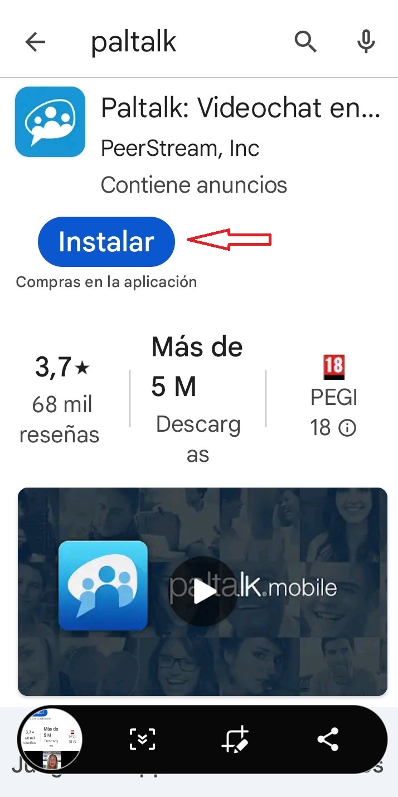
2.- Cuando esta instalado en el celular saldrá la aplicación.-
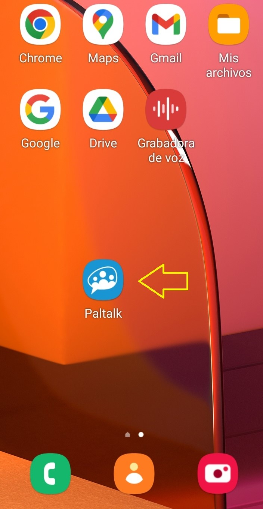
3.- Clip en la aplicación, si tenemos cuenta podemos iniciar sesión con google, facebook, apodo, correo electrónico o por el número de celular (teléfono), si no tienes cuenta te tienes que registrar.-
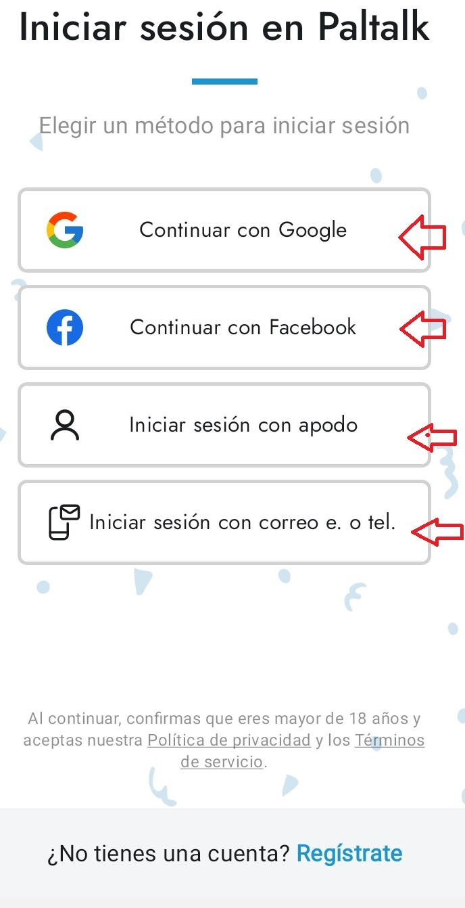
4.- Escribimos el apodo por ejemplo y contraseña e iniciamos sesión.-
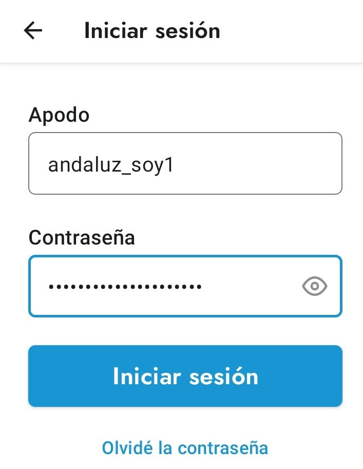
5.- Para buscar las salas elegimos el continente, por ejemplo Europa.-
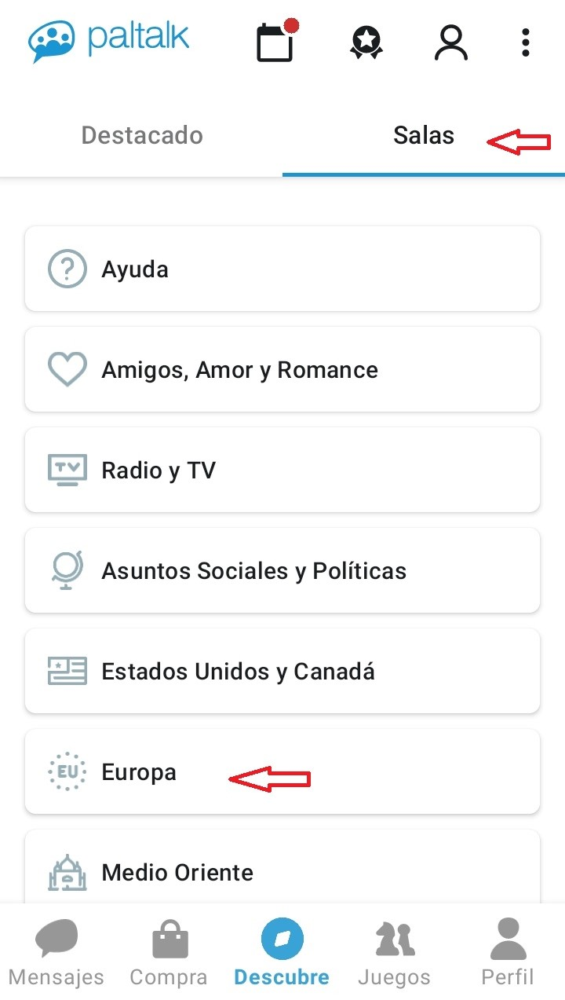
6.- Elegimos el País España.-
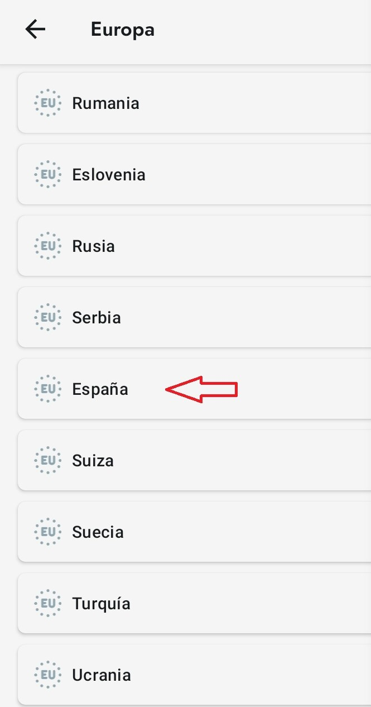
7.- En destacado vienen las salas que administras.-
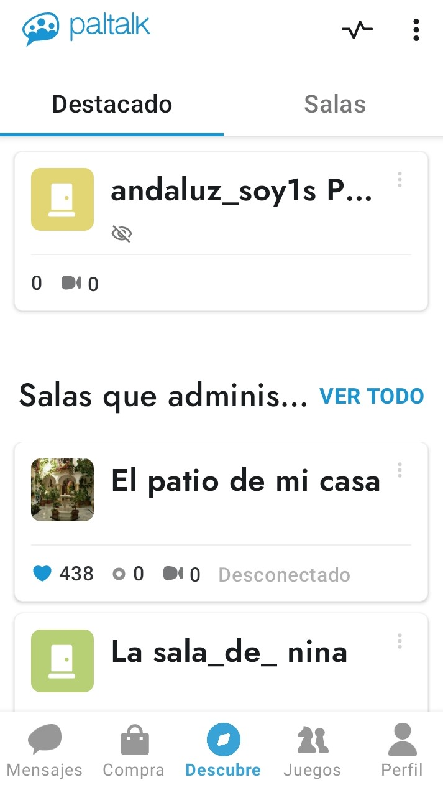
8.- Podéis establecer el estado a tus amigos y transmitirle en la sala que estáis, ponerte ausente, en línea o en no molestar.-
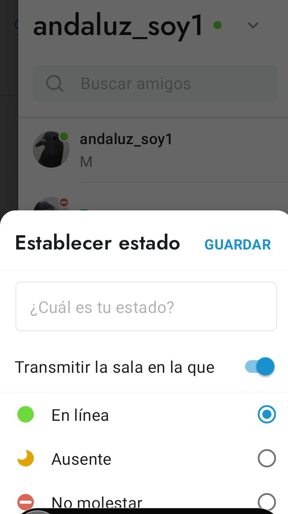
9.- Clip en configuraciones, y puedes ver tus salas y la lista de tus amigos.-
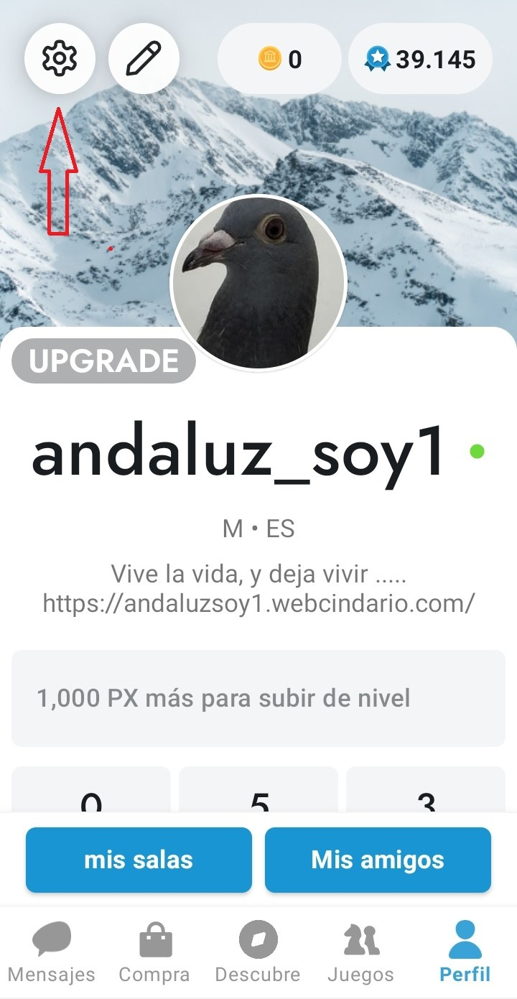
10.- En las configuraciones abajo del todo está para cerrar el Paltalk del celular, es la única forma de cerrarlo, si lo quitas de la pantalla sigue activo en ausente, utilizando recursos como batería, datos del celular ......-
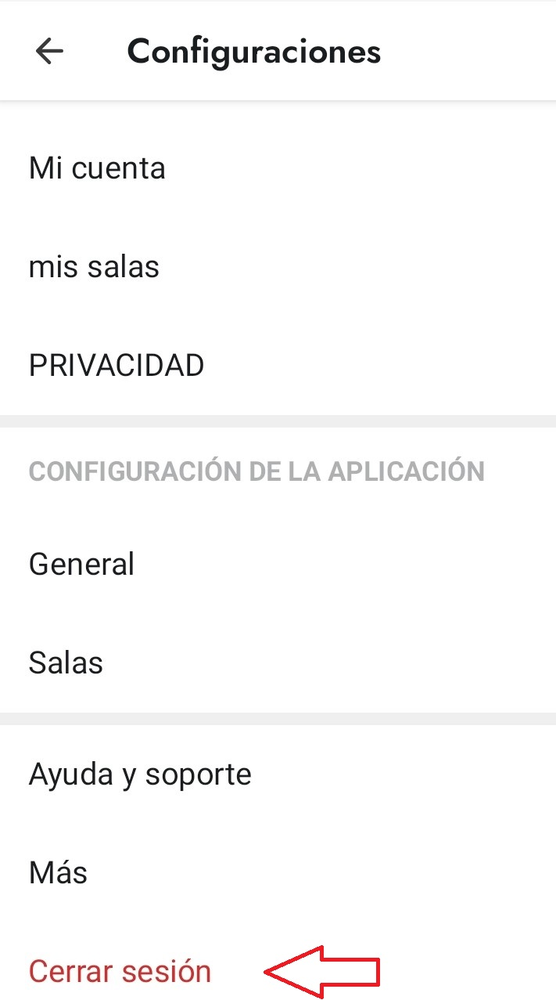
11.- En las salas puedes escribir, hablar, poner musica, poner la web cam .......
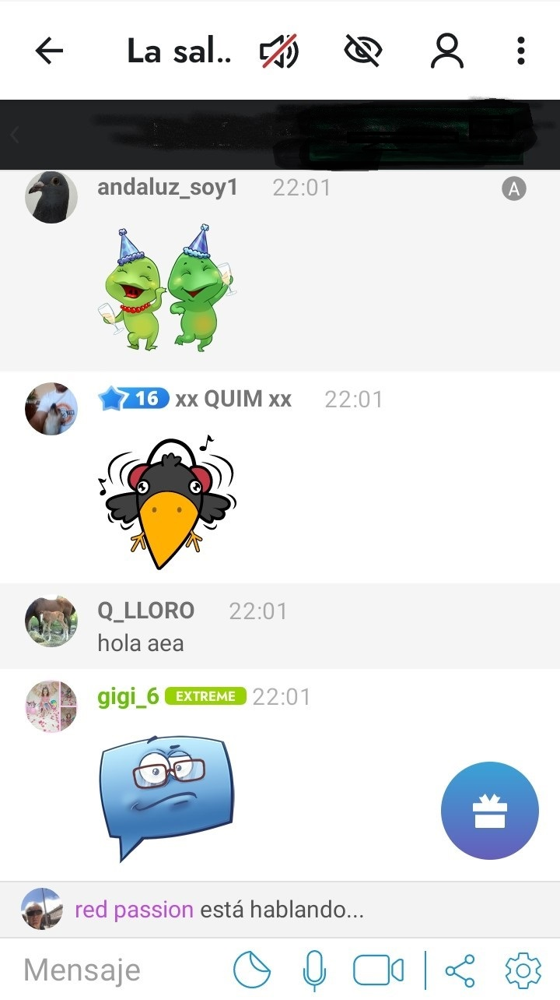
12.- Para utilizar el micrófono hay lista de cola, para hablar o poner música.-
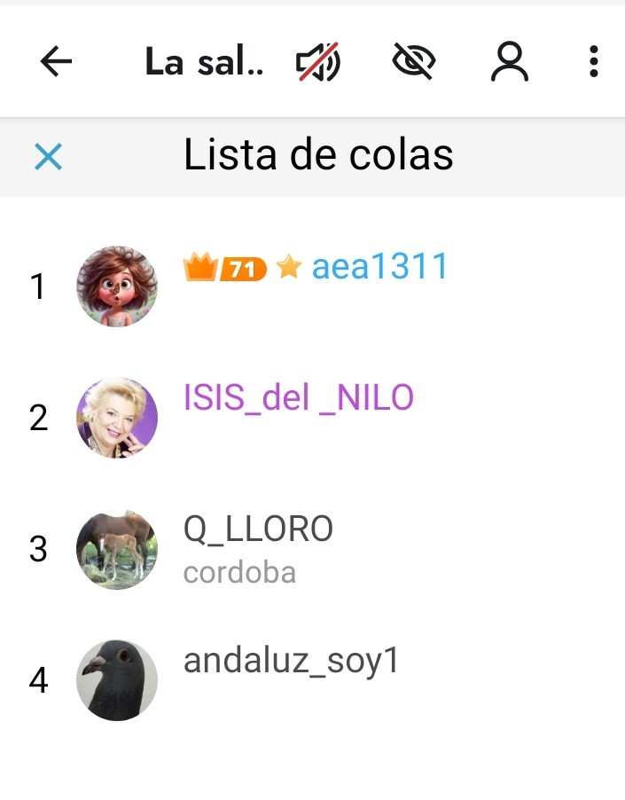
Espero que os ayude.-